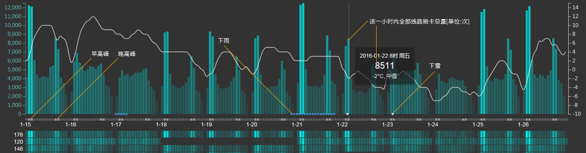
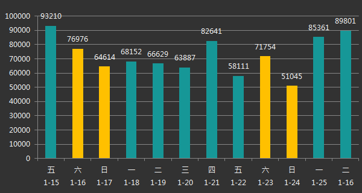
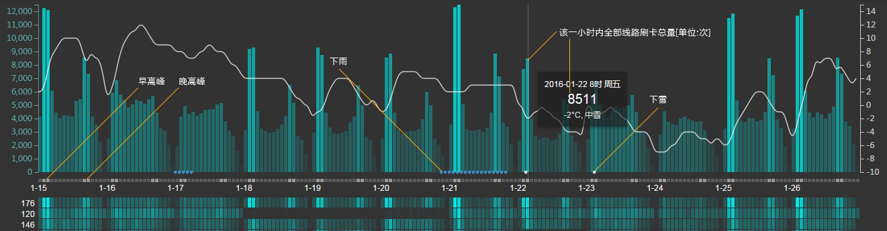
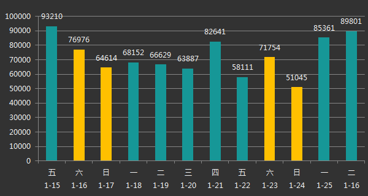

2016年1月22日到25日左右，苏州遭遇了近年来最强的寒潮雨雪天气影响，最低气温低到零下9度，并伴有严重冰冻。此类灾害天气，势必对民众出行造成影响。
我们对寒潮前后12天（2016/1/15-2016/1/26）的园区公交乘客刷卡数据，结合天气状况等因素进行分析，力求发现其中灾害天气情况下对公交出行的影响规律。
从而为今后在遭遇类似天气状况时，为运营部门提供预判和决策的支持。
数据说明：
结合公交的排班运营规律，此次分析只提取每天早上6点到晚上22点的乘客上车刷卡数据（未进行扩样，刷卡占比约62%左右）；时间精度以小时为单位汇总，覆盖园区公交运营的40条线路。
图例说明：
1. 上部的时间轴上的柱状图表示这一时段所有线路的刷卡量汇总，下部的运量矩阵以线路为单位，按刷卡量大小，由高到低排序，每个单元格表示这条线路这一时段的刷卡量；
2. 时间轴及运量矩阵采用统一的同色系分段设色，颜色越亮表明刷卡量越大，反之颜色越暗表明刷卡量越小；
3. 时间轴底部的蓝色小点表示当前时刻下雨，白色小点表示下雪。

初步分析：
寒潮前，刷卡量整体呈下降趋势，1月20日（周五）达到工作日最低，同比上周五降幅达37.65%，周四因降雨有一定回升；1月24日（周日）刷卡量达整体最低，同比上周日降幅21%； 寒潮后，因冰冻影响，刷卡量陡升，1月25日（周一）刷卡量同比上一周上升25.25%，1月26日更是上升达34.77%； 综上可见，因年底学校工厂的陆续放假，整体出行量呈现不断下降；恶劣天气下，民众出行更多会选择公共交通。

注：初步的分析成果有限，下一步计划进一步扩大数据样本，细化分析粒度，增加站点的串联分析以及地图空间的关联展现，力求发现更多有价值的公交出行规律。
小提示：
1. 建议使用Chrome浏览器打开（或IE，不建议使用360浏览器）；数据加载尚未优化，速度较慢，请耐心等待
2. 部分线路的个别日期刷卡数据缺失，线路运量的排序上会有一定误差。
数据说明：
结合公交的排班运营规律，此次分析只提取每天早上6点到晚上22点的乘客上车刷卡数据（未进行扩样，刷卡占比约62%左右）；时间精度以小时为单位汇总，覆盖园区公交运营的40条线路。
图例说明：
1. 上部的时间轴上的柱状图表示这一时段所有线路的刷卡量汇总，下部的运量矩阵以线路为单位，按刷卡量大小，由高到低排序，每个单元格表示这条线路这一时段的刷卡量；
2. 时间轴及运量矩阵采用统一的同色系分段设色，颜色越亮表明刷卡量越大，反之颜色越暗表明刷卡量越小；
3. 时间轴底部的蓝色小点表示当前时刻下雨，白色小点表示下雪。

初步分析：
寒潮前，刷卡量整体呈下降趋势，1月20日（周五）达到工作日最低，同比上周五降幅达37.65%，周四因降雨有一定回升；1月24日（周日）刷卡量达整体最低，同比上周日降幅21%； 寒潮后，因冰冻影响，刷卡量陡升，1月25日（周一）刷卡量同比上一周上升25.25%，1月26日更是上升达34.77%； 综上可见，因年底学校工厂的陆续放假，整体出行量呈现不断下降；恶劣天气下，民众出行更多会选择公共交通。

注：初步的分析成果有限，下一步计划进一步扩大数据样本，细化分析粒度，增加站点的串联分析以及地图空间的关联展现，力求发现更多有价值的公交出行规律。
小提示：
1. 建议使用Chrome浏览器打开（或IE，不建议使用360浏览器）；数据加载尚未优化，速度较慢，请耐心等待
2. 部分线路的个别日期刷卡数据缺失，线路运量的排序上会有一定误差。